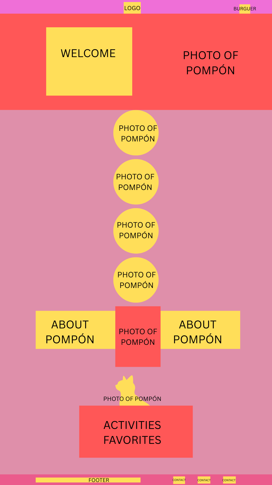
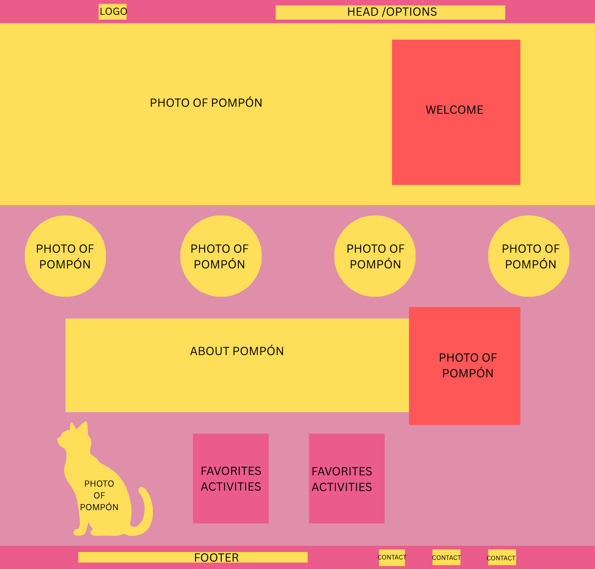

Site Name
Meet Pompón
The name "Meet Pompón" was chosen because Pompón is the main character of this website. He is my cat, and I want to share his unique personality, daily life, favorite activities, and his inspiring story. Even though he is missing one paw, he is a happy cat who can bring joy and remind people that they can overcome challenges.
Site Purpose
This website introduces my cat Pompón and shares information about his life, personality, favorite activities, meals, and inspiring story. Visitors can learn more about him through photos, fun facts, and different sections that show his daily life.
Scenarios
- What happened to Pompón's paw?
- What are Pompón's favorite activities and meals?
Color Schema
Vanilla (#F8EFD4): Used as the main background color to create a warm and cozy feeling.
Black (#1F1F1F): Used for headings and body text to provide good readability.
Pastel Moss Green (#7A8F63): Used for navigation, buttons, links, and other accent elements. This color is inspired by Pompón's beautiful green eyes.
Typography
Poppins: Used for headings and the navigation menu.
Open Sans: Used for paragraphs and general content because it is easy to read.
Wireframes
Mobile View

Desktop View
